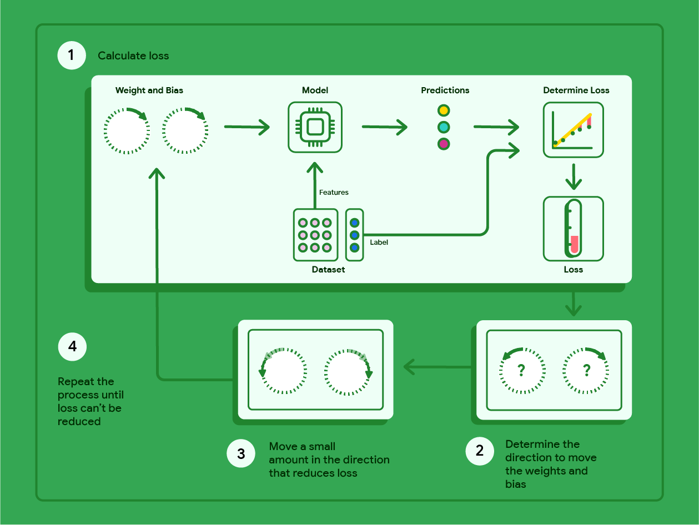
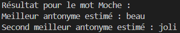

Recherche : génération de glossaire
Comme expliqué dans l’index du MkDocs, pour notre application, nous souhaitons utiliser une intelligence artificielle. N’ayant aucune idée de la manière de procéder, nous avons effectué de nombreuses recherches (modèles à utiliser, création d’un modèle, modèles déjà existants, appel à des API, phase d’entraînement, etc.). Tout l’article recense nos recherches, leur évolution, leurs abandons éventuels ou la justification de ces dernières.
La création d'un modèle d'intelligence artificielle.
Avant de commencer le développement de notre application, il était essentiel de comprendre le fonctionnement d’une intelligence artificielle et les différentes étapes nécessaires à sa création. Nous avons donc consacré une première phase de notre travail à la recherche théorique, afin d’acquérir une compréhension solide des concepts fondamentaux liés à la conception et à l’entraînement d’un modèle d’IA. Cette étape nous a permis d’identifier les éléments clés du processus d’apprentissage automatique, notamment le rôle des hyperparamètres et du taux d’apprentissage dans la performance finale d’un modèle.
Les hyperparamètres
Un hyperparamètre est une valeur définie manuellement par le concepteur de l’intelligence artificielle avant le début de l’entraînement. Contrairement aux paramètres internes du modèle (qui sont ajustés automatiquement par l’algorithme d’apprentissage), les hyperparamètres sont fixés par l’humain et influencent directement la manière dont le modèle apprend.
Ces hyperparamètres peuvent contrôler différents aspects, comme :
- La taille du réseau de neurones (nombre de couches ou de neurones),
- Le taux d’apprentissage,
- Le nombre d’itérations ou d’époques d’entraînement,
- Ou encore la taille des lots de données traités à chaque étape.
Un choix judicieux de ces valeurs est donc essentiel : de mauvais hyperparamètres peuvent conduire à un apprentissage inefficace, voire à un échec du modèle.
Le taux d’apprentissage
Le taux d’apprentissage (ou learning rate) est l’un des hyperparamètres les plus importants dans l’entraînement d’un modèle d’intelligence artificielle. Il détermine la vitesse à laquelle le modèle ajuste ses paramètres internes au fil des itérations.
Un taux d’apprentissage trop élevé risque d’empêcher le modèle de converger, c’est-à-dire qu’il n’arrivera jamais à une solution stable car il “sautera” autour du minimum recherché. À l’inverse, un taux trop faible rendra la convergence extrêmement lente, nécessitant un grand nombre de générations pour atteindre un résultat satisfaisant.
Ainsi, il est nécessaire de trouver un équilibre entre rapidité d’apprentissage et stabilité de convergence. Le taux d’apprentissage peut également être utilisé pour déterminer le nombre de générations ou d’époques d’entraînement nécessaires à la stabilisation du modèle.
Figure 1 : Influence du taux d’apprentissage sur la convergence d’un modèle d’intelligence artificielle. 
Cette première étape nous a permis de mieux comprendre la structure interne d’un modèle d’intelligence artificielle et les paramètres qui influencent son comportement. Ces connaissances ont constitué la base de notre travail, en nous aidant à aborder plus sereinement les étapes suivantes, notamment le choix et l’entraînement d’un modèle adapté à notre problématique de suggestion contextuelle de mots dans du code.
Différents modèles testés
Après avoir acquis une compréhension théorique du fonctionnement d’une intelligence artificielle et de ses paramètres essentiels, nous avons cherché à identifier le modèle le plus adapté à notre problématique. Notre objectif était de développer une IA capable de suggérer des synonymes ou des termes proches en fonction du contexte d’un mot donné dans un code source. Pour cela, nous avons étudié et expérimenté plusieurs modèles de représentation du langage afin d’évaluer leur pertinence et leurs performances.
L’utilisation de modèles de corpus pré-entraînés
Une première approche a consisté à exploiter des modèles de corpus préentraînés, c’est-à-dire des modèles ayant déjà appris les relations entre les mots à partir de vastes ensembles de données textuelles. Cette stratégie permet de bénéficier de connaissances linguistiques déjà acquises, évitant ainsi de devoir entraîner un modèle de zéro — une tâche coûteuse en temps et en ressources.
Nous avons notamment exploré l’utilisation de Word2Vec, un modèle classique de traitement du langage naturel capable de représenter les mots sous forme de vecteurs numériques (ou embeddings). Ces vecteurs traduisent les relations sémantiques entre les mots : ainsi, les termes ayant un sens similaire se trouvent proches dans l’espace vectoriel, tandis que ceux ayant des significations opposées ou différentes s’en éloignent.
Cependant, nous avons constaté que Word2Vec ne permettait pas toujours de distinguer correctement les relations de type synonyme ou antonyme, et qu’il pouvait donc manquer de précision dans certains cas d’usage spécifiques à notre domaine (le code informatique). D’autres expérimentations sont présentées dans notre dépôt GitHub (voir annexe technique).
Choix entre pré-entraînement et modèles existants
Une question importante s’est ensuite posée : devions-nous entraîner notre propre modèle, adapté à notre jeu de données (le code source et ses identifiants), ou utiliser un modèle déjà existant comme Word2Vec ou BERT ?
L’entraînement d’un modèle sur mesure aurait permis une meilleure adaptation au vocabulaire métier du code, mais demandait une quantité importante de données et une puissance de calcul significative. À l’inverse, un modèle préentraîné (comme BERT ou FastText) offrait une solution plus rapide à mettre en œuvre, tout en fournissant des résultats souvent pertinents dans des contextes généraux.
Nous avons donc décidé de nous concentrer sur un seul algorithme à la fois, afin d’analyser plus en profondeur ses performances. Cette démarche visait à répondre à une question centrale :
Comment faciliter et améliorer la sélection de termes métiers pertinents dans un contexte donné ?
Dans cette optique, l’utilisation des embeddings (représentations vectorielles des mots) s’est révélée prometteuse pour la suggestion intelligente de termes. En mesurant la proximité sémantique entre les vecteurs, il devient possible de proposer des synonymes cohérents avec le contexte d’apparition du mot dans le code.
Expérimentations sur les relations entre mots
Pour valider nos hypothèses, nous avons mené plusieurs tests pratiques. L’un d’eux consistait à prendre un mot de base, comme “Moche”, puis à modifier son vecteur en lui ajoutant le vecteur représentant une relation contraire (par exemple, un antonyme). L’objectif était d’observer le résultat vectoriel obtenu et de vérifier si le modèle parvenait à proposer un mot opposé de manière cohérente.
Ces expérimentations ont permis d’illustrer la capacité du modèle à manipuler les relations sémantiques, mais aussi ses limites lorsqu’il est appliqué à des contextes techniques ou spécialisés.
Figure 2 : Expérience de transformation vectorielle du mot “Moche” vers son contraire. 
Cette phase d’expérimentation nous a permis de comparer différents modèles linguistiques et d’évaluer leur capacité à comprendre le sens des mots dans un contexte précis. Nous avons retenu que l’utilisation d’embeddings préentraînés constitue une base solide pour développer une suggestion intelligente de mots, mais qu’une adaptation au domaine du code informatique reste nécessaire pour atteindre des résultats optimaux.
Choix pour la suggestion, évolution et limites
Première réflexion et système de suggestion
Avec nos précédentes expérimentations, nous avons conclu que l'utilisation des embeddings pour analyser le contexte est pertinente, mais moins précise pour suggérer directement des synonymes.
Nous avons donc choisi de conserver les embeddings pour se rapprocher au maximum du contexte, mais de récupérer une liste de synonymes depuis un service, qui sera ensuite comparée au contexte.
À la base, comme nous avions la liberté du langage, nous nous sommes penchés sur le français. Le seul service permettant de récupérer une liste de synonymes français sans passer par une traduction (Reverso) est ReSyf, qui propose également un code contenant les données. C'est un service local, mais il possède une liste figée.
Nous avons donc mis en place un système où le mot ciblé et les synonymes déjà saisis sont envoyés au back-end ; celui-ci interroge d'abord le service ReSyf pour obtenir une liste de synonymes, puis combine ces résultats avec les synonymes déjà présents pour calculer la proximité par rapport au contexte.
Limite de l'utilisation d'API
Néanmoins, cette solution atteint une certaine limite de pertinence lorsque l'on passe à des contextes très spécifiques : le fait que ReSyf soit figé devient bloquant. Par exemple, il n'y a pas de synonymes pour le contexte spécifique d'un plateau de jeu.
De plus, pour chaque nouvelle langue que nous voulons ajouter, il nous faut un nouveau service de synonymes, ce qui limite l'efficacité et la vitesse d'implémentation.
Nouvelle solution
Le client a choisi à la suite de cela, une nouvelle solution pour obtenir des synonymes et passer l'application en anglais. Nous nous sommes donc penchés sur les modèles de langages. Cependant, en tenant compte de la contrainte de conserver la souveraineté des données et de rester gratuit, l'utilisation d'API externes (ChatGPT, Gemini ou autres LLM répandus) n'est pas retenue. Il reste la possibilité d'utiliser un modèle local, ce qui impose des contraintes de performance sur la machine qui héberge l'application.
C'est pourquoi nous nous sommes tournés vers des modèles légers, inférieurs à 500 Mo : deux options se détachent — Gemma et Qwen3. Gemma est un modèle lié à Google, mais il est compliqué à faire tourner en local sans compte. Qwen3 est une solution viable, performante et qui tourne librement en local, avec une licence permettant son utilisation dans notre projet.